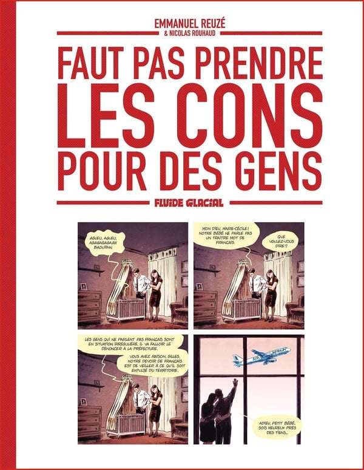
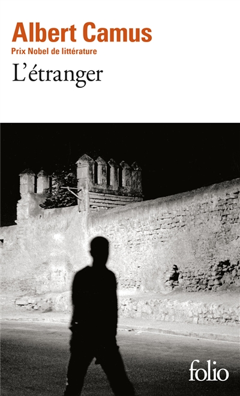
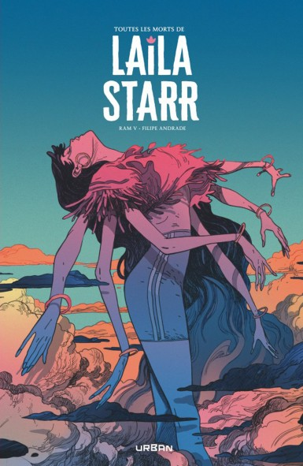

Mon univers littéraire
Depuis mon plus jeune âge, les livres sont mes compagnons de voyage. Cette page est une invitation à découvrir mon paysage littéraire.
Ce que je lis actuellement
Le rap a gagné : À quel prix ?
Mehdi Maïzi

Faut pas prendre les cons pour des gens
Emmanuel Reuzé
Mes livres favoris

L'Étranger

The Many Deaths of Laila Starr
The Killing Joke
Les livres que j'aimerais lire
Les Routes du Rap - Yérim Sar
La Distinction. - Pierre Bourdieu
Crépuscule – Juan Branco
Persepolis - Marjane Satrapi
Batman: Year One - Frank Miller
Sandman - Neil Gaiman
Mes librairies préférées
ATHENAEUM
Beaune, France
Librairie Les Volcans
Clermont-Ferrand, France